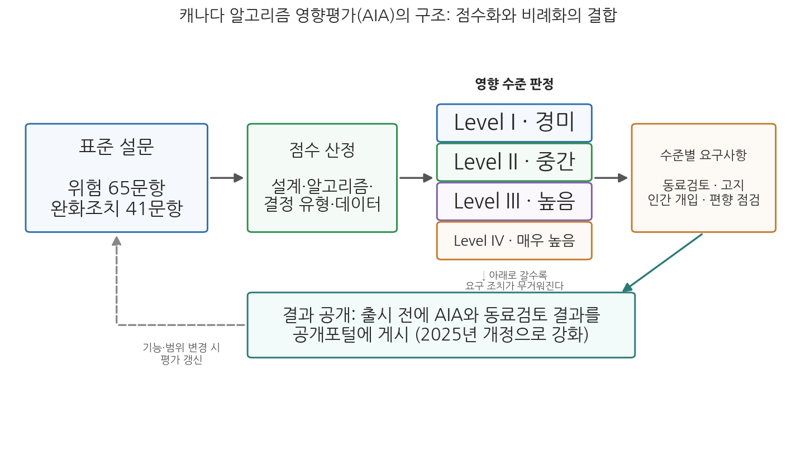

10주차 2차시. AI 영향평가 (2): 제도와 실무
이 지침의 목적은 자동화된 의사결정 시스템이 이용자, 연방기관, 캐나다 사회에 대한 위험을 줄이는 방식으로 배치되고, 더 효율적이고 정확하며 일관되고 해석 가능한 결정으로 이어지도록 보장하는 것이다. (캐나다 재무위원회, 「자동화된 의사결정에 관한 지침」)
이 장에서 배우는 것
캐나다 정부의 공공데이터 포털에 접속하면 누구나 이상한 문서 하나를 내려받을 수 있다. 연방 이민부(IRCC)가 해외 임시거주 비자 신청을 분류하는 알고리즘을 도입하면서 작성한 알고리즘 영향평가 결과다. 문서에는 이 시스템이 무엇을 하는지, 어떤 데이터를 쓰는지, 위험 등급은 몇 단계로 판정되었는지, 어떤 완화 조치를 약속했는지가 적혀 있다. 정부가 알고리즘을 쓰기 전에 스스로 위험을 평가하고, 그 평가서를 국민 앞에 공개하는 것이 법적 의무인 나라의 풍경이다. 반면 한국에서는 2026년 1월 AI기본법(인공지능 발전과 신뢰 기반 조성 등에 관한 기본법)이 시행되면서 고영향 AI 영향평가 제도가 도입되었지만, 법은 사업자가 평가하도록 "노력하여야 한다"고만 적었다. 같은 도구가 나라에 따라 전혀 다른 강도로 제도화되고 있는 것이다.
1차시에서 우리는 AI 영향평가라는 도구의 논리, 곧 왜 사전에 평가하며 무엇을 평가하는지를 보았다. 이번 차시는 그 도구가 실제 제도가 된 현장으로 간다. 가장 정교한 운영 사례인 캐나다를 해부하고, 미국과 EU의 서로 다른 경로를 비교한 뒤, 한국의 제도를 뜯어 본다. 그리고 마지막으로 불편한 질문을 던진다. 평가서가 쌓이는 것과 위험이 줄어드는 것은 같은 일인가. 구체적으로 다음을 배운다.
- 캐나다 자동화된 의사결정 지침과 알고리즘 영향평가의 구조, 그리고 2026년 현재의 운영 모습
- 미국(연방 법안의 좌초와 주 차원의 실험)과 EU(기본권 영향평가)의 경로
- 한국의 제도: 기존 법령의 지층과 AI기본법상 고영향 AI 영향평가
- 평가의 실효성 논쟁: 자기평가의 한계, 형식화(체크박스화)의 위험, 그리고 설계의 과제
이 장은 하나의 질문을 따라 전개된다. "영향평가를 실제 제도로 만들 때 무엇이 성패를 가르는가?"
2.1 캐나다의 지침과 알고리즘 영향평가를 해부한다 → 2.2 미국과 EU의 서로 다른 제도화 경로를 비교한다 → 2.3 한국의 법령 지층과 AI기본법상 영향평가를 본다 → 2.4 평가가 형식으로 전락할 위험, 실효성 논쟁을 따진다 → 2.5 좋은 영향평가 제도를 설계하기 위한 선택지들을 정리한다.
2.1 캐나다: 자동화된 의사결정 지침과 알고리즘 영향평가
세계에서 가장 오래 운영된 정부 AI 영향평가
정부 차원의 AI 영향평가를 가장 먼저, 가장 체계적으로 제도화한 나라는 캐나다다. 캐나다 재무위원회(Treasury Board)는 2019년 4월 「자동화된 의사결정에 관한 지침(Directive on Automated Decision-Making)」을 발효시켜, 연방정부가 행정 결정에 자동화 시스템을 쓰려면 알고리즘 영향평가(AIA)를 수행하도록 의무화했다. 지침이 말하는 자동결정시스템은 "인간 의사결정자의 판단을 지원하거나 대체하는 모든 기술"로, 규칙 기반 시스템부터 회귀분석, 예측 분석, 머신러닝, 딥러닝과 신경망까지 포괄한다. 최신 AI만이 아니라 오래된 점수표 방식까지 아우르는 넓은 정의다.
캐나다의 AIA는 "기관이 자동결정시스템과 관련된 위험을 더 잘 이해하고 줄일 수 있도록 지원하며, 설계 중인 응용프로그램 유형에 가장 적합한 거버넌스, 감독, 보고·감사 요건을 제공하기 위한 프레임워크"다. 뼈대는 세 가지 규칙이다. 첫째, 영향평가는 시스템 설계 초기 단계에 한 번, 생산(운영 개시) 이전에 한 번 더 실시하고 결과를 공개해야 한다. 둘째, 시스템의 기능이나 범위가 변경되면 평가를 갱신해야 한다. 셋째, 평가를 통해 위험의 정도를 네 단계의 영향 수준(Level I 경미 - Level IV 매우 높음)으로 나누고, 수준마다 요구되는 조치를 이행해야 한다.
평가의 실체는 온라인 설문이다. 재무위원회는 학계, 시민사회, 공공기관 등 대내외 이해관계자와 협의하여 위험 영역과 완화조치 영역의 질문지를 개발했고, 질문지는 개정을 거듭하며 확대되어 2026년 현재 65개의 위험 문항과 41개의 완화조치 문항으로 구성되어 있다. 평가 점수는 시스템의 설계, 알고리즘, 의사결정 유형, 영향, 데이터 등 다양한 요소를 기반으로 산출되며, 절차는 영향평가 설문 → 영향등급 확인 → 영향등급에 따른 요구사항 이행 → 영향평가 결과 게시의 순서로 진행된다. 등급이 높을수록 요구가 무거워진다. 예컨대 높은 등급의 시스템에는 외부 전문가의 동료검토(peer review), 당사자에 대한 고지, 결정 전 인간 개입, 정기적 성능·편향 점검 같은 조치가 붙는다.

그림 10-3을 읽는 법은 이렇다. 왼쪽에서 시작하는 흐름이 AIA의 네 단계 절차이고, 가운데 상자의 네 칸은 설문 점수가 배정되는 네 개의 영향 수준, 오른쪽은 수준에 비례해 무거워지는 요구 조치들이다. 아래의 되돌아가는 화살표는 시스템의 기능·범위가 변경되면 평가를 갱신해야 한다는 규칙을 나타낸다. 이 그림에서 알 수 있는 것은 캐나다 제도의 요체가 점수화와 비례화의 결합이라는 점이다. 표준화된 설문으로 위험을 점수화하기 때문에 기관 간 비교와 일관성이 가능해지고, 점수를 등급과 조치에 연동하기 때문에 1차시에서 본 위험 기반 접근이 자동으로 작동한다.
제도는 멈춰 있지 않다. 지침은 정기 검토를 거치며 개정되어 왔는데, 네 번째 검토에 따른 개정이 2025년 6월 24일 발효되었다. 이 개정은 AIA의 공개 시점을 시스템 출시 이전으로 못박고, 동료검토 결과도 출시 전에 전부 또는 요약본으로 공개하도록 했으며, 편향 테스트·데이터 거버넌스·설명 제공 관련 조치를 강화하고, 자동화를 선택한 이유와 장애인에 대한 잠재적 영향을 묻는 질문을 설문에 새로 넣었다. 개정 전부터 운영되던 기존 시스템에는 2026년 6월 24일까지 새 요건을 준수할 유예가 주어졌으므로, 2026년 여름 현재 캐나다 연방정부의 모든 자동결정시스템은 강화된 기준의 적용을 받는 셈이다(캐나다 재무위원회 사무국 발표 기준). 이런 운영을 근거로 캐나다의 알고리즘 영향평가는 행정의 투명성, 책임성, 적법성, 절차적 공정성을 달성하기 위한 실효성 있는 수단이라는 평가를 받는다(권은정, 2023).
캐나다 연방 이민부(IRCC)는 해외에서 접수되는 임시거주 비자 신청이 급증하자, 신청 건을 복잡도에 따라 분류(triage)해 단순 건은 빠르게 처리하고 복잡한 건은 심사관에게 보내는 첨단분석 시스템을 도입했다. 지침에 따라 IRCC는 이 시스템에 대한 알고리즘 영향평가를 수행했고, 그 결과를 정부 공개포털(open.canada.ca)에 게시했다. 공개된 평가서에는 시스템의 목적과 구조, 사용 데이터, 잠재적 영향과 함께 영향 수준 판정 결과가 담겼는데, 이 시스템은 4단계 중 2등급(중간 영향)으로 평가되었다. 2등급에는 동료검토, 협의 기록, 정기 점검, 기본적 편향 테스트, 인간에 의한 번복 가능성, 구제 절차 등의 조치가 요구되며, IRCC는 국립연구회의(NRC)의 동료검토 결과도 함께 공개했다. 최종 거부 결정은 알고리즘이 아니라 심사관이 내린다는 점도 평가서에 명시되었다.
이 사례가 보여 주는 것은 영향평가가 만드는 공적 기록의 힘이다. 시민, 언론, 연구자는 공개된 평가서를 근거로 "약속한 완화 조치가 실제 이행되고 있는가"를 따져 물을 수 있고, 실제로 캐나다에서는 이민 변호사와 시민단체가 공개 자료를 토대로 시스템의 거부율 변화를 추궁해 왔다. 평가서가 없었다면 이 논쟁 자체가 성립하지 않았을 것이다. 동시에 이 사례는 한계도 보여 준다. 공개된 것은 기관이 스스로 작성한 답변이며, 외부자가 그 답의 진실성을 검증할 수단은 여전히 제한적이다. 이 문제는 2.4절에서 다시 만난다.
2.2 미국과 EU: 좌초한 연방 법안, 실험하는 주, 그리고 기본권 영향평가
미국: 연방 입법의 좌초와 주·시 차원의 실험
미국에서는 알고리즘 영향평가를 민간 기업에까지 의무화하려는 연방 입법 시도가 있었다. 알고리즘 책임법안(Algorithmic Accountability Act)은 2019년 처음 발의된 뒤 2022년과 2023년에 다시 발의되었는데, 기업이 "자동화된 의사결정 시스템"과 "증강된 중요 의사결정 프로세스"에 대해 영향평가를 실시하도록 하는 내용이었다. 여기서 증강된 중요 의사결정 프로세스란 교육, 직업훈련, 고용, 근로자 관리, 정보통신망 접근, 교통, 가족계획, 금융서비스, 주거, 법률서비스 등 소비자의 삶에 중대한 영향을 미치는 결정을 뜻하고, 법안은 연방거래위원회(FTC)가 영향평가의 구체적 규정을 마련하고 연차보고서를 발간하도록 하는 등 다양한 권한과 의무를 부과하는 구상을 담았다. 신규 시스템의 도입 전 평가, 이해관계자 협의, 개인정보보호 테스트, 지속적 성능 평가, 데이터 기록 유지, 부정적 영향의 식별과 완화전략 평가, 절차의 문서화 등 열두 항목에 이르는 평가 요구사항도 규정했다.
다만 유의할 점이 있다. 이 법안은 세 차례 발의에도 불구하고 의회를 통과하지 못했고, 2026년 7월 현재까지 제정되지 않았다(미국 의회 입법정보시스템 기준). 즉 미국에는 민간 알고리즘 영향평가를 포괄적으로 의무화하는 연방 법률이 아직 없다. 그 공백을 메운 것은 주와 시 차원의 실험이다. 뉴욕시는 2023년 7월부터 지방법 144호(Local Law 144)를 시행해, 채용과 승진에 자동화된 고용결정도구를 쓰는 기업이 매년 독립적인 편향 감사(bias audit)를 받고 그 결과를 공개하도록 했다. 콜로라도주는 2024년 미국 주 가운데 처음으로 고위험 AI 시스템의 개발자와 배치자에게 영향평가 등 의무를 부과하는 포괄적 AI법을 제정했다. 다만 이 법은 산업계의 반발과 논쟁 속에 시행이 거듭 미뤄져, 2026년 5월에는 적용 범위를 좁히고 시행일을 2027년 1월로 늦추는 개정법이 통과되었다(콜로라도 주지사 서명, 2026년 5월). 미국의 경로는 요컨대 연방 차원의 포괄 입법 대신 개별 관할과 개별 영역에서의 실험이 이어지는 모자이크 형태다.
EU: AI Act의 기본권 영향평가
EU는 12주차에서 자세히 볼 AI Act(인공지능법)를 2024년 채택하면서, 그 안에 영향평가를 심어 넣었다. 제27조의 기본권 영향평가(Fundamental Rights Impact Assessment, FRIA)다. 공공기관을 비롯한 특정 배치자(deployer)가 고위험 AI 시스템을 운영에 투입하기 전에, 시스템이 사용될 업무 절차, 사용 기간과 빈도, 영향받을 개인과 집단의 범주, 그들에게 발생할 수 있는 구체적 위해 위험, 인간 감독 조치의 이행 방안, 위험이 현실화될 경우의 대응 조치와 내부 거버넌스·불복 절차를 평가해 문서화하도록 한 것이다. 1차시 표 10-1에서 본 평가 요소들이 법조문의 언어로 번역된 모습이라 할 수 있다.
시행 일정에는 2026년의 반전이 있다. 고위험 AI 관련 의무는 원래 2026년 8월 2일부터 적용될 예정이었으나, EU가 규제 단순화를 위해 추진한 디지털 옴니버스(Digital Omnibus) 입법으로 연기가 결정되었다. 2026년 5월 이사회와 유럽의회가 잠정 합의한 내용에 따르면, 부속서 III의 독립형 고위험 AI에 대한 의무는 2027년 12월 2일로, 제품에 내장된 고위험 AI에 대한 의무는 2028년 8월 2일로 미뤄진다(EU 이사회 보도자료, 2026년 5월 7일). 세계에서 가장 야심 찬 AI 규제조차 산업 경쟁력 논리 앞에서 속도 조절에 들어간 것으로, 규제와 혁신의 긴장이라는 12주차의 주제를 예고하는 장면이다.
표 10-2. 주요 AI 영향평가 제도의 비교 (2026년 7월 기준)
| 구분 | 캐나다 | 미국 | EU | 한국 |
|---|---|---|---|---|
| 근거 | 자동화된 의사결정 지침 (2019 발효, 2025 개정) | 연방 포괄 입법 없음. 뉴욕시 LL144(2023), 콜로라도 AI법(2024 제정, 시행 연기) 등 관할별 실험 | AI Act 제27조 기본권 영향평가 (2024 채택, 고위험 의무 적용 연기 중) | AI기본법 제35조 (2026년 1월 시행) |
| 대상 | 연방정부의 자동결정시스템 | 관할·영역별로 상이 (채용 도구, 고위험 AI 등) | 고위험 AI를 배치하는 공공기관 등 | 고영향 AI 제품·서비스 사업자 |
| 의무 성격 | 의무 (지침 위반 시 내부 제재) | 관할별 의무 | 의무 (법률상 의무) | 노력의무 + 국가기관의 우선 구매 고려 |
| 공개 | 평가 결과·동료검토 공개 의무 | 뉴욕시는 감사 결과 공개 의무 | 시장감시당국 통보 등 | 공개 의무 없음 |
2.3 한국: 법령의 지층과 AI기본법의 영향평가
AI기본법 이전의 지층
1차시에서 제도는 지층이라고 했다. 한국의 AI 영향평가도 여러 겹의 기존 법령 위에 놓여 있다. 우선 행정기본법 제20조는 "자동적 처분"을 명시적으로 규정해 AI를 적용한 시스템을 활용한 행정결정의 일반법적 근거를 두고 있다(9주차에서 본 조문이다). 평가 쪽 지층으로는 지능정보화기본법 제56조가 있다. 이 조문은 국가와 지방자치단체가 국민 생활에 파급력이 큰 지능정보서비스의 활용·확산이 사회·경제·문화와 국민의 일상생활에 미치는 영향을 조사·평가할 수 있게 한 사회적 영향평가 제도로, 안전성과 신뢰성, 정보격차 해소·사생활 보호 등 정보문화, 고용·노동·공정거래 등 사회경제, 정보보호에 미치는 영향을 평가 항목으로 든다. AI가 포함된 지능정보서비스에 이 조문을 적용하는 방안이 논의되었으나, 이 제도는 기본적으로 서비스가 이미 활용·확산되는 단계를 대상으로 하는 사후적 평가여서 한계가 있다는 지적을 받았다(권은정, 2023). 이밖에 과학기술기본법 제14조의 기술영향평가는 새로운 과학기술이 경제·사회·문화·윤리·환경에 미치는 영향을 사전 평가해 정책에 반영하도록 하지만, 개별 시스템이 아니라 기술 일반을 다룬다.
요컨대 기존 지층에는 "정부의 개별 AI 시스템을 도입 전에 평가하는" 장치가 비어 있었다. 그 빈칸을 채우러 들어온 것이 AI기본법이다.
AI기본법의 고영향 AI 영향평가: 노력의무라는 선택
2025년 1월 공포된 AI기본법은 1년의 준비기간을 거쳐 2026년 1월 22일 시행령과 함께 시행되었다. 법은 먼저 고영향 인공지능을 "사람의 생명, 신체의 안전 및 기본권에 중대한 영향을 미치거나 위험을 초래할 우려가 있는" AI 시스템으로 정의하고(제2조 제4호), 에너지·보건의료·범죄 수사·채용·대출 심사 등 구체적 영역은 법률과 시행령으로 정한다. 영향평가의 핵심 조문은 제35조다. 제1항은 인공지능사업자가 고영향 AI를 이용한 제품 또는 서비스를 제공하는 경우 사전에 사람의 기본권에 미치는 영향을 평가하기 위하여 "노력하여야 한다"고 규정하고, 제2항은 국가기관 등이 고영향 AI를 이용한 제품·서비스를 이용하려는 경우 영향평가를 실시한 제품·서비스를 우선적으로 고려하여야 한다고 규정한다. 강제 대신 유인으로 설계한 것이다. 아울러 제33조는 사업자가 자신의 AI가 고영향에 해당하는지를 사전에 검토하고, 필요하면 과학기술정보통신부장관에게 확인을 요청할 수 있는 확인 절차를 두었다.
시행령(2026년 1월 시행)은 영향평가에 담을 내용을 구체화했다. 시행령 제27조에 따르면 영향평가에는 ① 생명·신체의 안전과 기본권에 영향받을 가능성이 있는 대상의 식별, ② 영향받을 수 있는 기본권 유형의 식별, ③ 기본권에 대한 사회적·경제적 영향의 내용과 범위, ④ 고영향 AI의 사용 행태, ⑤ 평가에 활용한 정량적·정성적 평가지표와 결과 산출 방식, ⑥ 위험의 예방과 손실의 복구 등에 관한 사항, ⑦ 평가 결과 개선이 필요한 경우 그 이행 계획이 포함되어야 한다(과학기술정보통신부, 2026년 1월 기준). 캐나다의 설문이나 EU 제27조와 견주어 보면, 항목 구성 자체는 국제 표준과 크게 다르지 않다. 정부는 시행 초기의 혼란을 줄이기 위해 최소 1년 이상의 계도기간을 두고, 이 기간에는 인명사고나 인권 훼손 같은 극히 예외적인 경우에만 사실조사를 진행하겠다고 밝혔다(과학기술정보통신부 발표, 2026년 1월).
문제는 강도다. 강의 덱이 제기했던 비판은 시행 이후에도 유효하다. "노력하여야 한다"는 문구로는 영향평가의 실효성을 담보하기 어렵고, 고영향 AI 개념이 추상적이고 광범위하며 모호해 어떤 시스템이 대상인지에 대한 예측가능성이 낮으며, 고영향 AI에 대한 실효성 있는 규제 조항과 저작권·개인정보 문제에 대한 보호장치가 부족하다는 것이다. 표 10-2가 보여 주듯, 한국의 선택은 비교 대상 가운데 가장 부드러운 쪽에 있다. 평가는 노력의무이고, 결과 공개 의무는 없으며, 이행을 강제할 수단은 국가기관의 조달 우선 고려라는 간접 유인뿐이다. 이 선택을 규제 불확실성 속에서 산업의 숨통을 틔운 현실적 절충으로 볼 것인지, 위험 관리를 시장의 선의에 맡긴 후퇴로 볼 것인지가 한국판 실효성 논쟁의 출발점이다.
법률상 의무화에 앞서, 한국에서 AI 영향평가의 실무 도구를 먼저 내놓은 것은 국가인권위원회였다. 인권위는 2024년 5월 「인공지능 인권영향평가 도구」를 마련해, 공공기관이 개발·활용하는 모든 AI 시스템과 민간의 고위험 AI에 대해 인권영향평가를 실시하도록 정부에 권고했다. 이 도구는 4단계 72개 문항으로 구성되어, AI의 개발·활용 주체가 기술적 위험과 함께 인권에 미치는 부정적 영향과 그 심각성을 식별하고, 예방·완화·구제 방안을 점검하도록 설계되었다. 평가 부담을 줄이기 위한 해설 자료도 함께 제공되었다. 법적 구속력은 없는 권고이지만, AI기본법 시행 이전에 공공부문이 참조할 수 있는 국내 최초의 체계적 평가 문항을 제시했다는 의미가 있다.
이 사례가 보여 주는 것은 제도의 다원성이다. 영향평가는 반드시 하나의 법률로만 제도화되는 것이 아니라, 인권기구의 권고 도구, 부처의 가이드라인, 법률상 의무가 겹겹이 쌓이며 만들어진다. 동시에 이 사례는 한국 제도의 과제도 드러낸다. 인권위의 72개 문항과 시행령 제27조의 일곱 항목이 실무 현장에서 어떻게 연결될지, 누가 평가의 품질을 검증할지는 아직 정해지지 않은 채로 남아 있다.
2.4 실효성 논쟁: 평가서가 쌓이면 위험이 줄어드는가
자기평가의 구조적 한계
가장 정교하다는 캐나다 제도조차 뼈아픈 비판을 받아 왔다. 비판의 과녁은 자기평가(self-assessment)라는 구조다. 캐나다의 AIA는 평가 주체인 정부 기관이 스스로 설문에 답해 위험을 평가하는 방식이므로, 평가 결과가 기관의 의지나 역량에 따라 크게 달라질 수 있고, 객관성과 일관성이 떨어질 위험이 있으며, 사회적 영향을 과소평가할 위험이 있다(AlgorithmWatch, 2021; Hamilton, 2022). 또한 평가 단계에서 시민과 이해관계자의 참여가 부족하고(Chiusi et al., 2021), 평가 결과의 이행을 강제할 규정이 미흡하며, 운영 과정의 모니터링과 위험완화 조치가 부재하다는 문제도 지적되어 왔다. 2025년 개정이 공개 시점과 동료검토, 지속적 점검을 강화한 것은 바로 이 비판들에 대한 응답이었다.
숙제를 안 한 학생에게 숙제 검사를 맡기는 격이라는 이 비판은, 시험대에 오른 다른 제도에서 극적으로 실증되었다.
뉴욕시 지방법 144호는 2023년 7월부터 자동화된 고용결정도구를 쓰는 고용주에게 연 1회의 독립적 편향 감사와 결과 공개, 구직자 고지를 의무화했다. 세계적으로 주목받은 이 법의 성적표는 이듬해 나왔다. 코넬대 연구진 등이 155명의 조사원을 동원해 뉴욕시 소재 고용주 391곳의 준수 실태를 전수 조사한 결과, 감사보고서를 게시한 곳은 18곳, 고지문을 게시한 곳은 13곳에 불과했다(Wright et al., 2024). 연구진은 이 현상을 무효 준수(null compliance)라고 이름 붙였다. 법이 "자신의 도구가 법 적용 대상인지"의 판단을 고용주 재량에 맡겼기 때문에, 아무것도 공개하지 않은 고용주가 법을 어긴 것인지 애초에 적용 대상이 아니라고 판단한 것인지 외부에서 구별할 수 없다는 것이다. 그 결과 구직자는 진정을 제기할 수 있는지 알 수 없고, 시 당국은 집행할 수 없으며, 연구자는 편향을 연구할 수 없는 상태가 되었다.
이 사례가 보여 주는 것은 형식화가 일어나는 정확한 경로다. 평가·감사 의무의 발동 요건을 피평가자의 자기 판단에 맡기고 위반을 식별할 수단을 만들지 않으면, 제도는 서류상 존재하되 현실에서는 작동하지 않는다. 규제받는 쪽에는 투명성을 회피할 강한 유인이 있고, 재량은 그 유인이 흐를 통로가 된다. 캐나다가 등급 판정을 표준 설문 점수에 묶고 공개를 의무화한 것, 그리고 그런 캐나다조차 자기응답의 진실성 문제를 남긴 것은 이 경로를 얼마나 차단했는지의 정도 차이다.
체크박스의 위험과 과잉규제의 위험
실효성 논쟁의 다른 축은 정반대 방향에서 온다. 과도한 규제가 오히려 공공부문의 AI 활용을 질식시킨다는 우려다. EU AI Act 초안이 제시되었을 때 산업계는 AI 시스템을 등급화하고 엄격한 영향평가와 준수 절차를 의무화하는 것이 유럽 기업들의 글로벌 경쟁력을 약화시킬 수 있다고 우려했고(Berkman Klein Center, 2021), 앞서 본 2026년의 고위험 의무 연기는 그 우려가 입법에 반영된 결과다. 콜로라도의 시행 연기도 같은 계열의 사건이다.
두 위험은 동전의 양면이다. 평가가 과도하게 형식적이고 규제 중심적으로 운영되면, 실질적 위험 완화나 사회적 책임성 제고보다는 체크박스식 통과의례로 전락한다. 담당자는 문항을 채우는 요령을 익히고, 서류는 완벽해지는데 시스템은 그대로인 상태다. 거꾸로 실질을 확보하려고 요건을 무한정 쌓으면 준수 비용이 치솟아 규제 완화의 정치적 역풍을 부르고, 제도 자체가 후퇴한다. 연구자들은 여기에 더 근본적인 문제를 덧붙인다. 영향평가에서 무엇을 "영향"으로 셀 것인지 자체가 평가를 설계하는 쪽의 선택이며, 영향받는 공동체가 그 정의 과정에서 배제되면 평가는 당사자의 경험과 동떨어진 항목들만 측정하게 된다는 것이다(Metcalf et al., 2021).
자기평가의 한계와 체크박스화의 위험은 결국 같은 처방으로 수렴한다. 시민사회와 이해관계자의 실질적 참여와 피드백이다. 논리는 이렇다. 평가의 형식화는 평가자와 검증자가 동일인일 때 일어난다. 그런데 정부 바깥에서 시스템의 영향을 가장 잘 아는 것은 그 시스템의 결정을 받는 당사자들이다. 이들이 평가 문항의 설계에, 평가 결과의 검토에, 운영 단계의 감시에 개입할 수 있으면 자기평가는 외부 검증이 있는 자기평가로 바뀐다. AI Now Institute의 원래 제안이 "기관과 공중이 함께 평가할 기회"를 강조했던 것도, 캐나다가 이해관계자 협의와 결과 공개를 제도의 축으로 삼은 것도 이 논리다. 참여는 민주적 장식이 아니라 실효성의 기술적 조건이라는 것이 이 분야 연구의 합의에 가깝다.
2.5 영향평가 설계의 과제
지금까지의 제도 비교와 실효성 논쟁을 종합하면, AI 영향평가를 설계할 때 정답이 정해져 있지 않은 다섯 개의 선택 축이 드러난다.
첫째, 의무의 강도다. 법적 의무(캐나다, EU)로 할 것인가, 노력의무와 유인(한국)으로 할 것인가. 의무화는 실효성을 높이지만 준수 비용과 회피 유인도 키운다. 둘째, 평가의 주체다. 자기평가로 할 것인가, 제3자 평가나 동료검토를 결합할 것인가. 자기평가는 시스템을 가장 잘 아는 쪽의 지식을 동원하지만 진실성 문제를 남기고, 제3자 평가는 객관성을 높이지만 비용이 들고 평가 시장의 품질 문제가 생긴다. 셋째, 공개의 수준이다. 전면 공개(캐나다)인가, 당국 제출인가, 비공개인가. 공개는 외부 감시를 가능하게 하지만 보안·영업비밀과 긴장한다. 넷째, 시점과 주기다. 도입 전 일회 평가인가, 변경 시 갱신과 운영 중 상시 점검을 요구하는가. 콜링리지 딜레마를 기억한다면 일회 평가로는 부족하다. 다섯째, 참여의 폭이다. 담당 부서의 서면 작업인가, 영향받는 집단이 문항 설계와 검토에 개입하는 절차인가.
이 다섯 축은 서로 물려 있다. 예컨대 공개 없는 의무화는 무효 준수를 부르고, 참여 없는 공개는 아무도 읽지 않는 문서를 낳으며, 갱신 없는 사전 평가는 배포 첫날의 스냅사진으로 낡아 간다. 좋은 설계란 다섯 축을 함께 조율하는 일이며, 그 조율의 기준은 결국 이 교재의 렌즈, 곧 어떤 공공가치를 얼마나 지키려 하는가로 되돌아온다.
영향평가는 위험을 식별하고 문서화하는 장치이지, 위험을 제거하는 장치가 아니다. 평가서에 적힌 완화 조치를 실제로 이행하게 만드는 것은 감사와 감독, 이의제기와 구제 절차, 조달 기준, 그리고 최종적으로는 법적 책임이라는 별도의 장치들이다. 즉 영향평가는 AI 거버넌스라는 더 큰 체계의 한 부품으로 작동할 때만 힘을 갖는다. 그 더 큰 체계, 곧 원칙과 기구와 규범이 겹쳐진 AI 거버넌스의 전체 지형이 바로 다음 11주차의 주제다.
요약
정부 차원의 AI 영향평가를 가장 체계적으로 제도화한 나라는 캐나다로, 2019년 발효된 자동화된 의사결정 지침에 따라 연방정부의 자동결정시스템은 표준 설문(2026년 현재 위험 65문항, 완화조치 41문항)으로 영향평가를 수행해 네 단계 영향 수준을 판정받고, 수준에 비례하는 조치를 이행하며, 결과를 공개해야 한다. 2025년 6월 개정은 출시 전 공개와 동료검토 공개, 편향 테스트 강화 등으로 제도를 보강했고, 이민부 비자 분류 시스템의 공개된 영향평가는 이 제도가 만드는 공적 기록의 힘과 자기평가의 한계를 동시에 보여 준다. 미국은 알고리즘 책임법안이 세 차례 발의에도 제정되지 못한 채 뉴욕시의 채용 도구 감사법, 콜로라도의 주 AI법 같은 관할별 실험이 이어지는 모자이크 경로를 걷고 있으며, EU는 AI Act 제27조에 공공기관 등의 기본권 영향평가를 규정했으나 2026년 디지털 옴니버스 합의로 고위험 의무의 적용이 2027년 말 이후로 연기되었다. 한국은 행정기본법의 자동적 처분, 지능정보화기본법의 사후적 사회적 영향평가라는 지층 위에, 2026년 1월 시행된 AI기본법 제35조가 고영향 AI 영향평가를 노력의무와 조달상 유인의 형태로 도입했고 시행령 제27조가 평가 항목을 구체화했다. 실효성 논쟁은 자기평가의 진실성 문제와 뉴욕시의 무효 준수 사례가 보여 준 형식화 경로, 그리고 과잉규제가 부르는 후퇴 위험 사이에서 벌어지며, 의무의 강도, 평가 주체, 공개 수준, 시점과 주기, 참여의 폭이라는 다섯 개의 설계 축을 어떻게 조율하는가가 제도의 성패를 가른다.
토론·복습 문제
10-5. (서술형 연습) 캐나다의 알고리즘 영향평가와 한국 AI기본법상 고영향 AI 영향평가를 의무의 성격, 평가 주체, 결과 공개, 이행 확보 수단의 네 측면에서 비교하고, 두 제도의 차이가 각각 어떤 실효성 문제를 낳을 수 있는지 논하시오.
10-6. (찬반 토론) "한국 AI기본법의 노력의무 방식은 산업 육성과 위험 관리를 절충한 현실적 설계다"라는 입장과 "노력의무는 사실상 규제의 부재이며, 뉴욕시의 무효 준수 사례가 보여 준 형식화가 반복될 것이다"라는 입장이 맞서 있다. 각 입장의 논거를 정리한 뒤 자신의 입장을 정하고, 계도기간이 끝난 뒤의 제도 개선 방향을 한 가지 제안하시오.
10-7. 뉴욕시 지방법 144호의 무효 준수 현상이 발생한 제도적 원인을 분석하고, 같은 문제를 예방하기 위해 캐나다 제도가 채택한 장치들(표준 설문, 등급 연동, 공개 의무, 동료검토)이 각각 어떤 원인에 대응하는지 짝지어 설명하시오.
10-8. 2.5절의 다섯 가지 설계 축(의무 강도, 평가 주체, 공개 수준, 시점과 주기, 참여의 폭)을 적용해, 여러분이 속한 대학이 입학사정 보조 AI를 도입한다고 가정하고 영향평가 제도를 설계해 보시오. 각 축에서 내린 선택의 근거를 밝히시오.